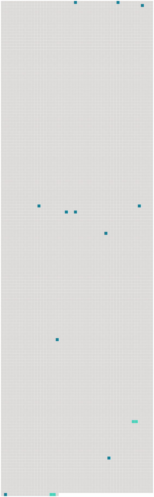

Longueur nb maillons : 13 mentions |
 |
mon Dieu, vous aurez oublié de l'expliquer au postillon, et, tout naturellement, il aura cru que vous alliez à [Paris]
Dans ce temps -ci, toutes les voitures de poste vont à [Paris] [3 phrases]
c'est que Baptiste est sourd à ne pas entendre le canon, et avec cela qu'il dort sur son cheval la moitié du temps, et que ses bêtes sont accoutumées à la route de [Paris] dans ce temps -ci … [166 phrases] Et d'abord, il faut dire que Laurence était née à [Paris] dans une position médiocre. [1 phrases] Elle avait quinze ans lorsque, sa famille étant tombée dans la misère, il lui fallut quitter [Paris] et se retirer en province avec sa mère. [1 phrases]
Et puis il arriva que Laurence dut à la protection de je ne sais quelle douairière d'être rappelée à [Paris] , pour [y] faire l'éducation des filles d'un banquier. [11 phrases]
Je parie que c'est madame Ducornay, qui est revenue de [Paris] avec toutes sortes de belles toilettes que je ne pourrai pas voir, et de bonnes senteurs qui nous donnent la migraine. [62 phrases] Sa mère, retenue à [Paris] par une indisposition de sa seconde fille, n'avait pu partir avec elle. [52 phrases] Elle fut si aimable et si jolie dans ce badinage, que le bon maire en tomba amoureux comme un fou, voulut lui baiser la main, et ne se retira que lorsque madame D … et Pauline lui eurent promis de le faire dîner chez elles ce même jour avec la belle actrice de [la capitale] [21 phrases] — On dit qu'elle a un si grand succès à [Paris] !! [16 phrases]
Enfin, quand le départ des plus désappointées eut éclairci les rangs, on osa s'approcher, mendier une parole, un regard, toucher, demander l'adresse de la lingère, le prix des bijoux, le nom des pièces de théâtre le plus à la mode à [Paris] , et des billets de spectacle pour le premier voyage qu'on ferait à [la capitale] |
 |
La ressource peut être téléchargée sur la page Ortolang
Si vous avez des questions ou vous voyez des erreurs, merci d'envoyer un mail à silvia.federzoni89@gmail.com
Site développé par S. Federzoni (contact)